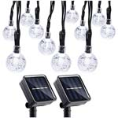

Equipment List
Being prepared when going Boondock camping is a must. Because boondock camping takes you off the grid, you must bring all the things you don’t normally think about when you leave on a trip, one example is toilet paper. If you don’t bring it, you’ll have to do without it and that can be a problem in those messy moments. Before you go on a Boondocking camping trip it is important to think through every item that you use each day and determine if you will need it. Below is a list of the basic items needed when you go Boondock camping, followed by more specific items you'll need for those of you who want to bring a few more comforts when camping off the grid.
Universal Equipment List
Shelter and Sleeping Needs
- Tent with rain fly
- Sleeping bag
- Pillow
- Fleece sleeping bag liner
- Blankets
- Sleeping mat or cot
- Camp chairs
- Spare batteries & Chargers
- Flashlight, headlamp, or lantern
- Canopy tent
- Tarp & rope
- Gas Firepit & Propane
Food Preparation and Eating
- Stove or Grill
- Fuel, (gas, propane, etc.)
- Matches and lighter
- Ice cooler
- Pots, pans, and tea kettle
- Chopping board
- Plates, bowls, and mugs
- Cooking and eating utensils
- Dish cloths, and dish towels
- Wash basin and dish soap
- Trash bags
- Food
- Portable water jugs (lots!)
Clothing
- Normal everyday clothing, but keep in mind that lightweight and quick drying materials like nylon will help you stay warmer, drier, and more comfortable in the cold. Cotton and denim take a long time to dray after getting wet.
- Rain jacket or poncho
- Clean and dry clothing to sleep in.
- Proper shoes that will keep you warm, dry, and protected.
- Wool hat, gloves, coat, multiple layers for warmth.
- Spare underwear and socks.
- Sun hat, sun block, after sun, and sunglasses.
Toiletries
- Your personal toiletries
- Toothbrush
- Toothpaste
- Medications
- First aid kit
- Hand sanitizer and hand soap
- Toothbrush and toothpaste
- Towels
- Insect repellent
- Toilet Paper
15 Items Recommended For Boondock Camping
Folding Table & Benches
Portable Gas Firepit
Small Generator
Portable Water Jug
Tent Canapy

Propain Tank

RV Battery
Propane Camp Stove

Outdoor Solar Lights
Camping Toilet
Solar Lantern

Toilet Tent

Solar Shower

Hammock
Water Bottle

Folding Table & Benches
A folding table and benches are useful for meal preparation, eating and playing games with the family.
Portable Gas Firepit
Part of the rules of Boondock camping is to leave the area with no sign that you had been there. A gas firepit is an easy and convenient way to have a campfire while leaving the area unmarked by a crudely made firepit.
Small Generator
A generator is useful in many ways. If you need a power source this provide it. It is also useful for powering the electricity in an RV.
Portable Water Jugs
While Boondock camping it is so important that you bring plenty of water for the trip. These portable water jugs are a great way to carry and use your water.
Tent Canopy
A canopy tent can provide shade during those hot days when the trees are not providing any shade.
Propane Tank
A large propane tank can be used with the gas fireplace and the gas stove.
RV Battery
It's a good idea to have several extra RV batteries to power the RV during a longer camping trip.
Propane Camp Stove
A propane camp stove is a convenient and easy way to cook while Boondock camping.
Outdoor Solar Lights
Hanging these solar lights around camp is a easy and convenient way to light up the night.
Camping Toilet
This bucket toilet is an easy way to create a bathroom in the Boondocks.
Solar Lantern
A portable LED Solar lantern is another great way to light the camp at night.
Toilet Tent
This tall tent can be used in several different ways. It can create a toilet tent with the portable bucket toilet. You can use it as a shower tent with the use of the solar shower. It can also be used as a changing tent.
Solar Shower
The black bag of this solar shower is a great way to capture the heat of the sun and warm the water for a refreshing shower.
Hammock
A hammock is the best way to lay down and relax while camping.
Water Bottle
These steel water bottles help insulate your drinking water and keep it cold.